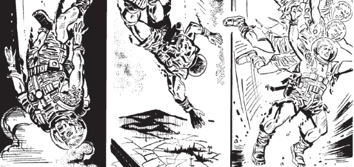

A sort of British Bionic Man ... but wait! Didn't we already do this in M.A.C.H. 1? As hapless fighter pilot Harry Angel gets smooshed together with his onboard computer, you'll believe a man can fly! Well, not actually, but it tries its best.
Despite this being a neatly succinct five-part standalone series without any legs (or wings), Harry Angel has become a darling of the meta, cruising through Armoured Gideon's crossover extravaganza The Collector before landing in the Zombo-verse and declaring himself Zombo Prime!
Art by Carlos Pino
| Story Title | Parts | Pages | w indicates a wraparound coverCovers | Year(s) | Issues | Writer | Artist | Colourist | Letterer |
|---|---|---|---|---|---|---|---|---|---|
| Angel | 5 | 24 | 96: Ian Kennedy 1 | 1979 | Reprints: M321 (supplement)95-99 | Chris Stevens | Carlos Pino | [b&w] | John Aldrich |
From Armoured Gideon Features a crossover event with multiple (at the time) out of print characters.[The Collector] | 11 | 67 | 895: Simon Jacob 897: Simon Jacob 2 | 1994 | 889-899 | John Tomlinson | Simon Jacob: 1‑8,10‑11 Mike White: 9 (final panel 8) various | <-- | 1‑8,10‑11: Annie Parkhouse 9: Peter Knight various |
From ZomboZ.O.M.B.O. | 1 | 6 | 0 | 2017 | 2K40 | Al Ewing | Henry Flint | <-- 2pp, [b&w] | Simon Bowland |
From Judge DreddThe Immigrant | 1 | 10 | 0 | 2020 | SFS25 | Al Ewing | Jake Lynch | Jim Boswell | Annie Parkhouse |
| year | episodes | pages |
| 1977 | 0 | 0 |
| 1978 | 0 | 0 |
| 1979 | 5 | 24 |
| 1980 | 0 | 0 |
| 1981 | 0 | 0 |
| 1982 | 0 | 0 |
| 1983 | 0 | 0 |
| 1984 | 0 | 0 |
| 1985 | 0 | 0 |
| 1986 | 0 | 0 |
| 1987 | 0 | 0 |
| 1988 | 0 | 0 |
| 1989 | 0 | 0 |
| 1990 | 0 | 0 |
| 1991 | 0 | 0 |
| 1992 | 0 | 0 |
| 1993 | 0 | 0 |
| 1994 | 11 | 67 |
| 1995 | 0 | 0 |
| 1996 | 0 | 0 |
| 1997 | 0 | 0 |
| 1998 | 0 | 0 |
| 1999 | 0 | 0 |
| 2000 | 0 | 0 |
| 2001 | 0 | 0 |
| 2002 | 0 | 0 |
| 2003 | 0 | 0 |
| 2004 | 0 | 0 |
| 2005 | 0 | 0 |
| 2006 | 0 | 0 |
| 2007 | 0 | 0 |
| 2008 | 0 | 0 |
| 2009 | 0 | 0 |
| 2010 | 0 | 0 |
| 2011 | 0 | 0 |
| 2012 | 0 | 0 |
| 2013 | 0 | 0 |
| 2014 | 0 | 0 |
| 2015 | 0 | 0 |
| 2016 | 0 | 0 |
| 2017 | 1 | 6 |
| 2018 | 0 | 0 |
| 2019 | 0 | 0 |
| 2020 | 1 | 10 |
| 2021 | 0 | 0 |